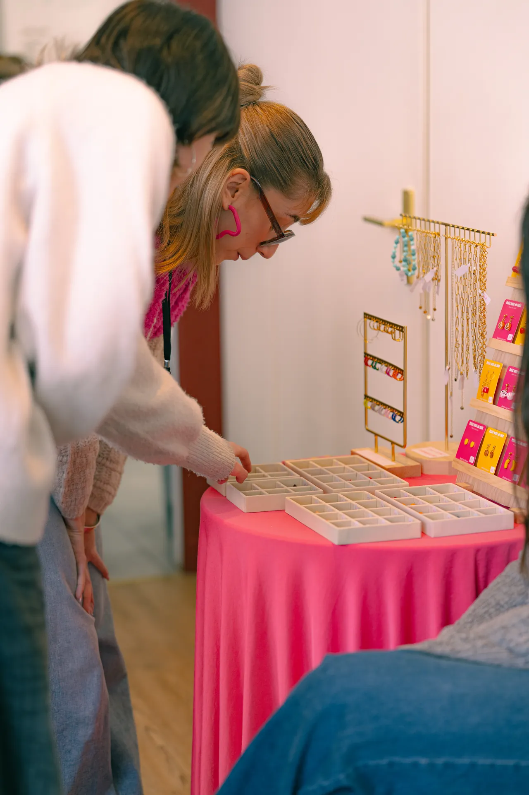
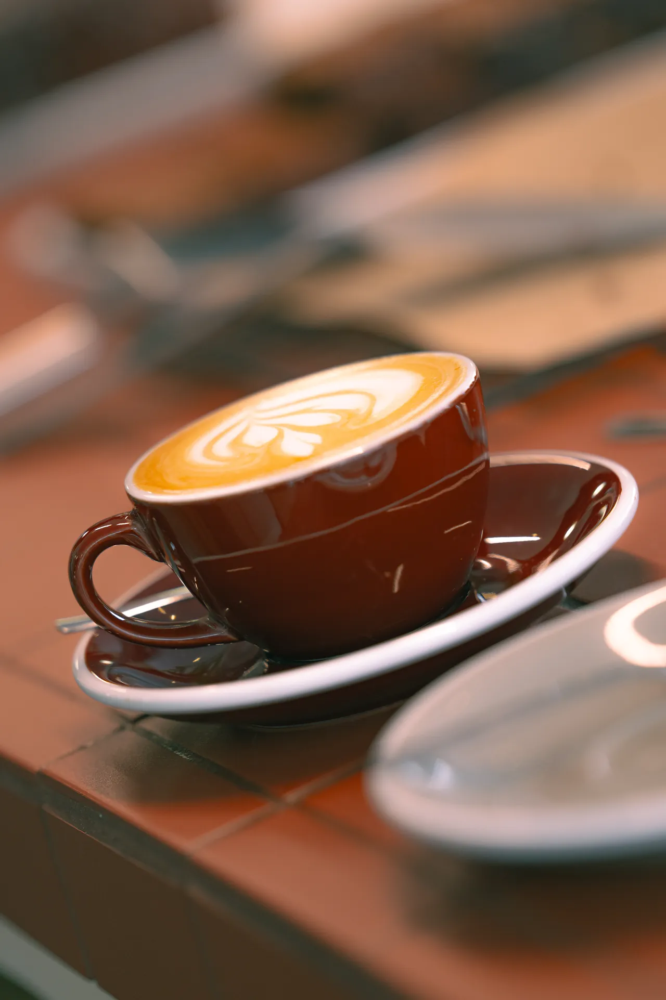
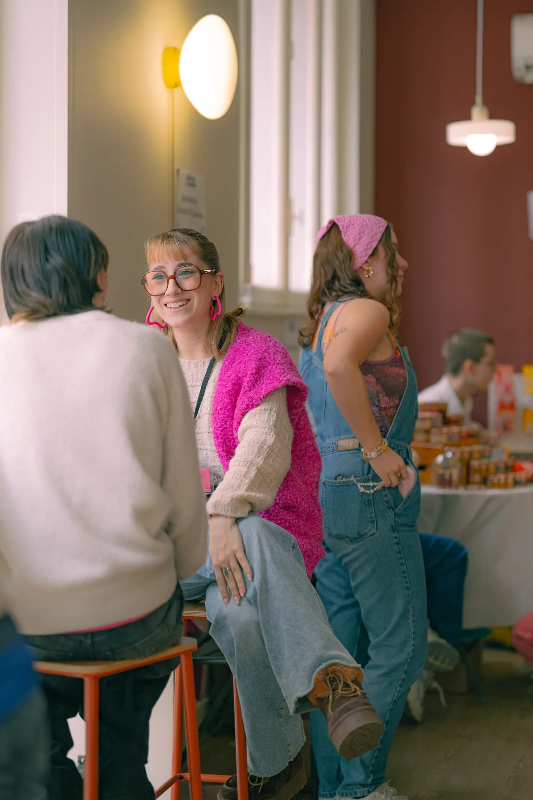

Édition n°01 — Terminée
L'amour avec
un grand A.
07.02.2026 9h30 — 18h
Notre toute première édition a célébré l'amour sous toutes ses formes — amis, couple, soi, famille — en mettant en avant 7 artistes lyonnais. Tout était fait main avec un engagement clair : zéro IA. L'événement était porté par l'association RONDS & COULEURS.
Toutes les éditionsBilan
Un premier
succès.
Cette première édition a été un vrai succès. Merci à toutes et tous pour votre présence et votre soutien.
Visiteurs.
Deux cent quatre-vingt-deux personnes venues découvrir les créations de nos artistes lyonnais en une seule journée.
Artistes exposants.
Sept créateur·rices lyonnais·es, sélectionné·es à la main, qui ont présenté leurs créations 100 % faites main.
Lieu unique.
Le Coin Café, 5 Cours de la Liberté, Lyon 7 — un espace chaleureux et intimiste pour cette première rencontre.


Retour en images
Une journée
mémorable.
Des stands colorés, des échanges chaleureux entre artistes et visiteurs, et une ambiance intimiste au cœur de Lyon 7. La preuve que l'art fait main a sa place dans nos vies.
Artistes présents
Sept artistes,
une scène.
Voici les créateur·rices qui ont présenté leurs créations faites main lors de cette première édition.
S'y rendre